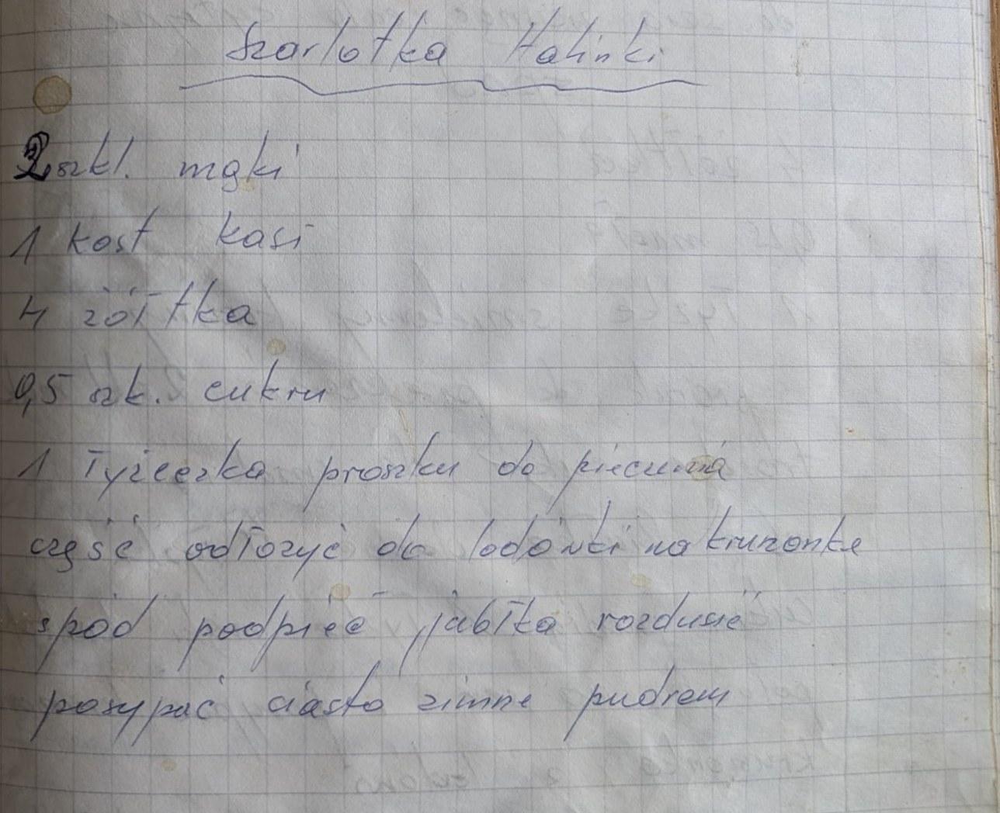
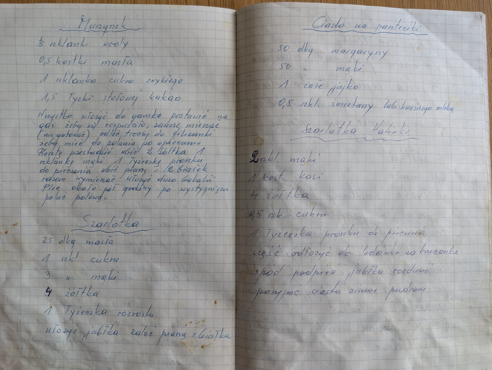

Szarlotka Halinki


Składniki
- 2 szkl. mąki
- 1 kostka margaryny Kasia
- 4 żółtka
- 0,5 szkl. cukru
- 1 łyżeczka proszku do pieczenia
- jabłka
- cukier puder
Przygotowanie
- Zagnieść ciasto, część odłożyć do lodówki na kruszonkę.
- Spód podpiec.
- Jabłka rozdusić i ułożyć na spodzie.
- Posypać kruszonką.
- Zimne ciasto posypać pudrem.
Oryginalny zapis
Szarlotka Halinki 2 szkl. mąki 1 kost. kasi 4 żółtka 0,5 szk. cukru 1 łyżeczka proszku do pieczenia część odłożyć do lodówki na kruszonkę spód podpiec jabłka rozdusić posypać ciasto zimne pudrem